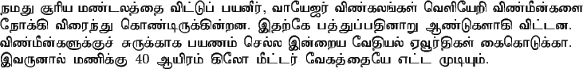

English Input:
{#tamil
namadhu chUriya maNTalaththai viTTup paya^nIr{\rm ,} vAyEjar
viNkala~NkaL veLiyERi viNmI^n kaLai nOkki viraindhu
koNTirukki^nRa^na{\rm .}
idhaRkE padhdhuppadhi^nARu ANTukaLAki viTTa^na{\rm .}
viNmI^nkaLukkuch churukkAka payaNam chella i^nRaiya
vEdhiyal EvUrdhikaL kaikoTukkA{\rm .} ivaRRi^nAl maNikku
$ 40 $ Ayiram kilO mITTar vEkadhdhaiyE eTTa muTiyum{\rm .}
#endtamil}
Tamil Output:

2009-12-04
ITRANS Home Page: http://www.aczoom.com/itrans/